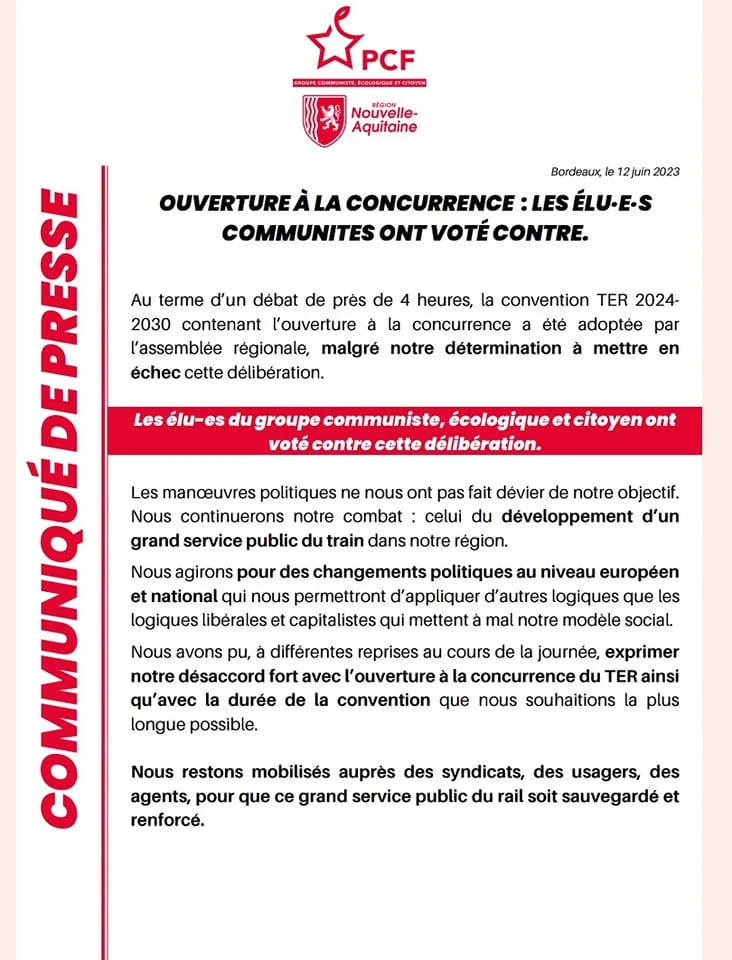

Communiqué relayé
TER en Nouvelle-Aquitaine. Les élu·es communistes votent contre l’ouverture à la concurrence
Date indiquée par Facebook · 13 juin 2023
Repères éditoriaux
Nous avons relayé le communiqué du groupe communiste, écologique et citoyen daté du 12 juin 2023. Le groupe explique son vote contre la convention TER 2024–2030, défend un grand service public du train et annonce la poursuite de son action avec les syndicats, les usagers et les agents.

Sources
Archive rouge · document diffusé sur Facebook · AR-0002-FB-01631
À lire aussi · Collèges ruraux. Le PCF 79 conteste les fermetures envisagées · Le lien d’origine